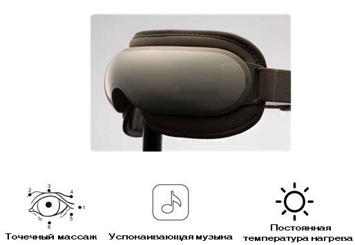
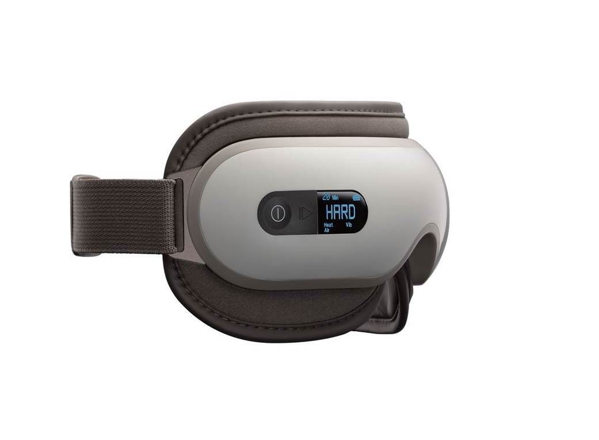
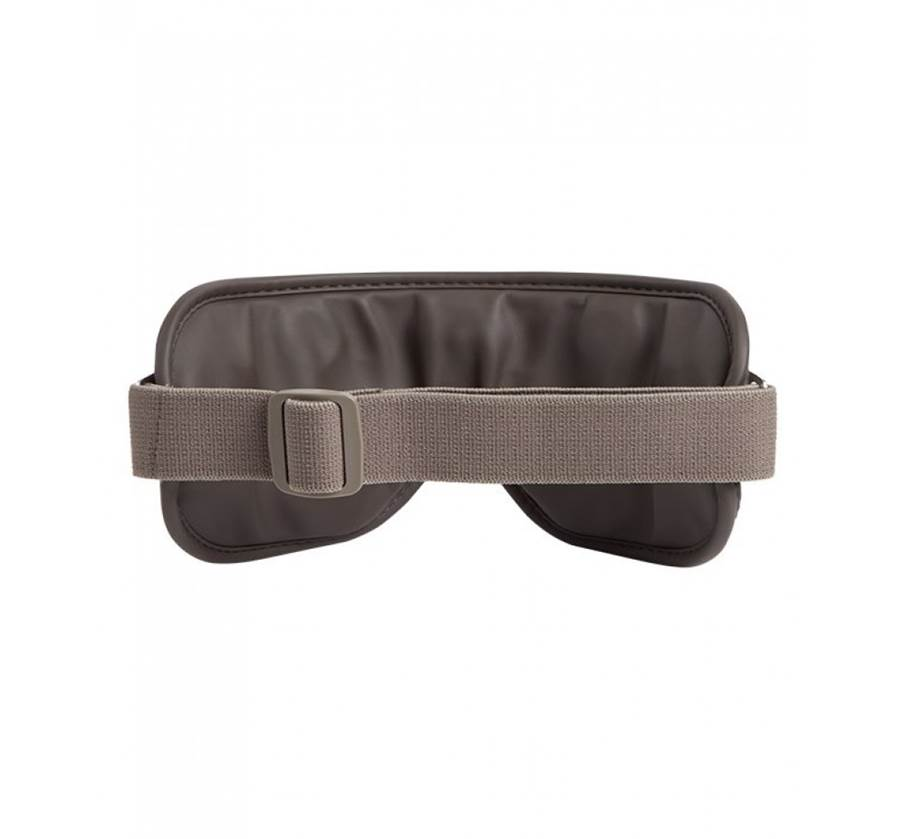
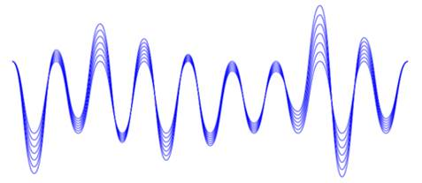
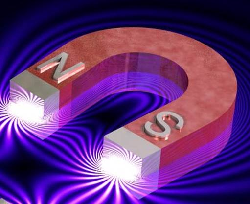
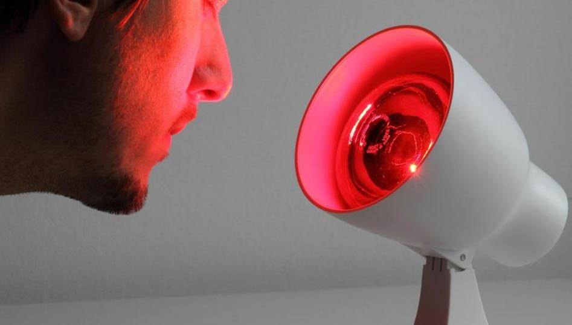
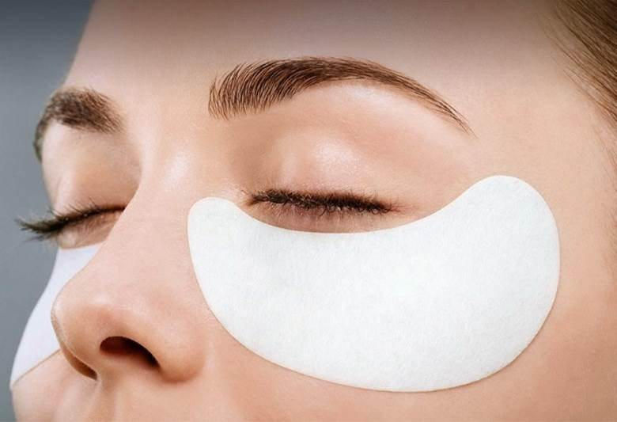
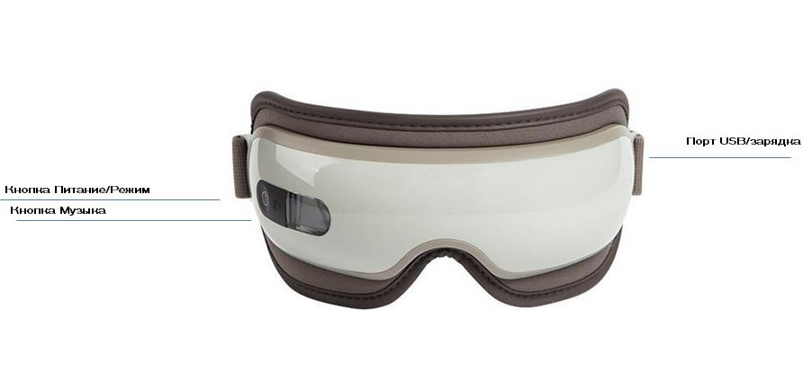
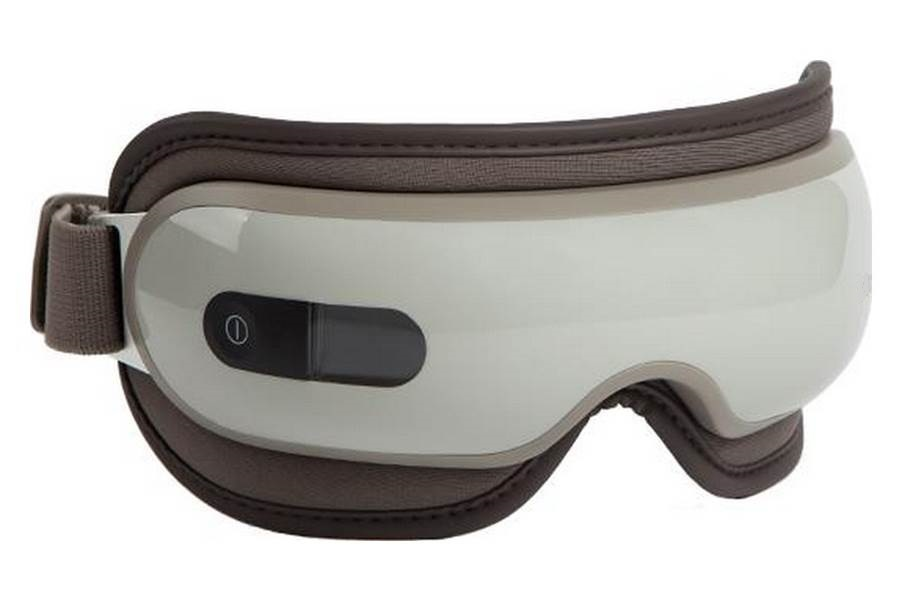

Массажер для глаз BORK D600
Массажно терапевтический комплекс для глаз
Теория и эффект
Теория
С помощью различных вибраций, массажа и нагрева, управляемых системой контроля компьютерного чипа, улучшается кровообращение и снимается напряжение.
Эффект
Полное расслабление области вокруг глаз. Приятный массаж глаз снимает отеки и усталость.
Управляется массажер всего одной кнопкой
Вы можете выбрать одну из трех программ:
- Hard – интенсивный и сильный массаж.
- Medium – обычный массаж с комфортной интенсивностью.
- Sleep – аккуратный и нежный массаж, во время которого вы можете даже спать.
5 технологий для борьбы с мигренью, усталости глаз и старением:
- Компрессионный массаж
- Вибрационный массаж
- Магнитотерапия
- Аудиотерапия
- Инфракрасный подогрев
Компрессионный массаж
Деликатно воздействует на около глазную область и способствует повышению тонуса кожи и мышц кровеносных сосудов.
Компрессионное воздействие помогает выводить лишнюю жидкость, снимая отечность вокруг глаз.
Вибрационный массаж
Приводит в норму кровоток и лимфоток, благодаря чему питательные вещества и кислород активнее доставляются к мышцам глаз и нервам. Это приводит к повышению чёткости зрения, устранению головных болей и признаков стресса.
Магнитотерапия
Встроены 2 магнита, при помощи, которых он формирует статическое магнитное поле. Воздействие электромагнитного поля положительно сказывается на регенерации клеток и обмена веществ внутри них. Благодаря этой процедуре происходит омоложение клеток кожи, разглаживаются мимические морщины, и снимается усталость с глазных мышц.
Аудиотерапия
Приятная музыка помогает достичь расслабления, дарит чувство умиротворения и настраивает на хороший крепкий сон.
Инфракрасный подогрев
Восстанавливает здоровье кожи вокруг глаз, усиливает кровоток.
В чём же кроется секрет массажера BORK?
- Улучшает кровообращение
- Устраняет отеки и мешки под глазами
- Позволяет уменьшить морщины вокруг глаз
- Способствует нормализации сна
- Помогает устранить чрезмерное напряжение
- Предотвращает появление мигреней и болевых ощущений
- Помогает расслабиться
Кто его может использовать?
Массажёр прекрасно подходит людям, которые по роду деятельности вынужден подвергать напряжению зрительные органы, а это:
- Работающие за компьютерами
- Водители
- Работники офисов
- Учителя
- Врачи
- Летчики
- Дизайнеры
- Люди, занимающиеся письменным трудом
Массажер для глаз BORK D600
Молодость ваших глаз вместе с BORK D600
Пользоваться массажером очень просто! Нужно только надеть устройство и настроить оптимальную программу. Всё, что вам останется сделать — получить удовольствие от приятной релаксации под расслабляющие звуки природы, встроенные в массажер. И если вы действительно найдете "общий язык" с этим продуктом, то уже через три-четыре недели вы заметите видимый результат, лицо станет свежим и более привлекательным!
Подарите своим глазам радость молодости, и они обязательно ответят вам благодарностью!
Комплектация

Массажер для глаз: 1 шт.
USB-кабель: 1 шт.
Адаптер питания: 1 шт.
Руководство по эксплуатации с гарантийным талоном: 1 шт.
Технические характеристи
Напряжение: 3,7 В
Мощность: 5 Вт
Габариты (В×Ш×Г)
Вес: 0,275 кг
Сделано в Китае
Меры предосторожности
- Не используйте продукт во время вождения.
- Не используйте продукт при высокой температуре или повышенной влажности.
- Не используйте продукт, если вы страдаете от глаукомы, катаракты, отслойки сетчатки или других глазных заболеваний.
- Используйте этот продукт с осторожностью, если Вы имели какие-либо операции на глазах, и проконсультируйтесь с врачом перед использованием; пожалуйста, прекратите использовать продукт немедленно, если Вы почувствовали недомогание.
- Используйте этот продукт с осторожностью, если Вы страдаете от инсульта, гипертонии и гипотонии; перед использованием, проконсультируйтесь с врачом.
- Не используйте продукт после употребления алкоголя.
- Перед использованием убедитесь, что вы не в контактных линзах.
- Чтобы избежать повреждений, вызванных избыточным давлением подушки безопасности, включайте питание только после того, как Вы установите продукт на лице.
- Используйте только адаптер питания, поставляемый в комплекте.
- Этот продукт не предназначен для диагностики, терапии и других коммерческих целей.